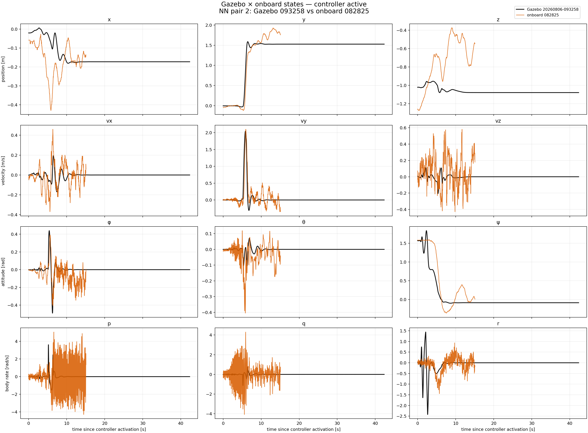
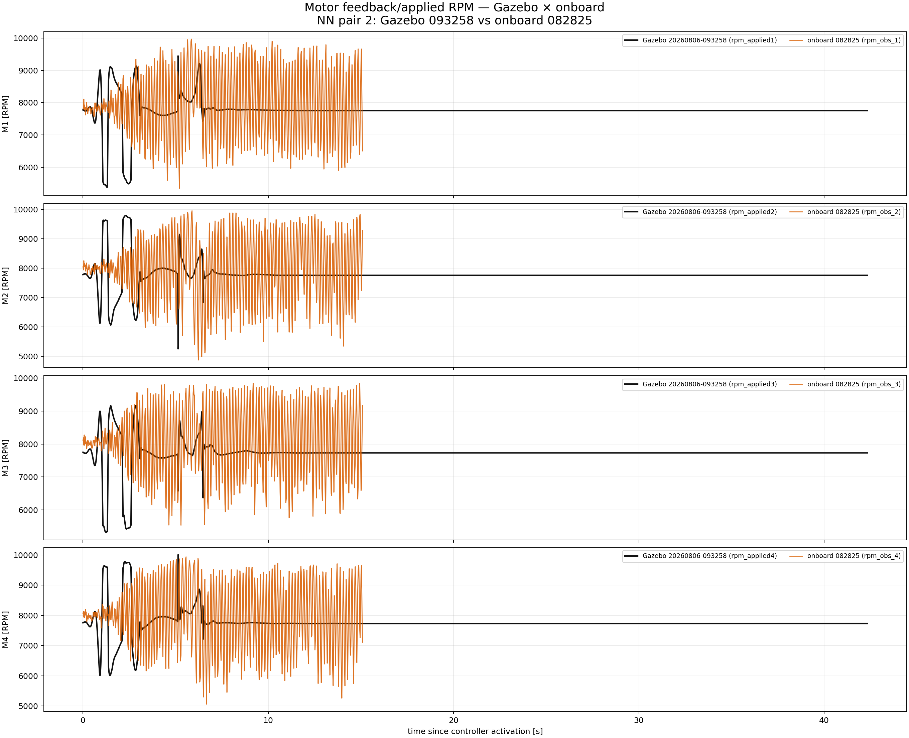
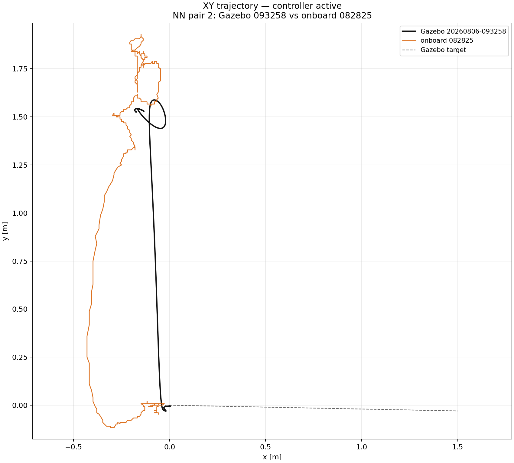
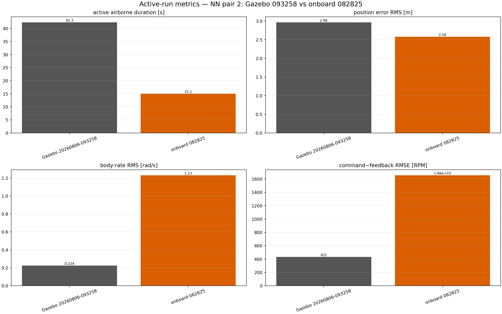

All curves are aligned at controller activation and stop at the end of the usable active/airborne window.
| run | controller | duration [s] | position RMS [m] | rate RMS [rad/s] | RPM tracking RMSE |
|---|---|---|---|---|---|
| Gazebo 20260806-093258 | NN | 42.34 | 2.963 | 0.2236 | 430.9 |
| onboard 082825 | NN | 15.08 | 2.578 | 1.231 | 1657 |



